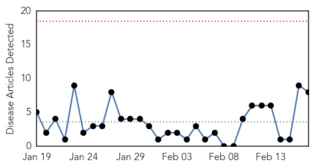
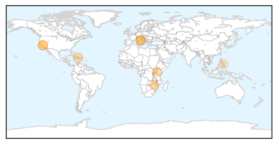
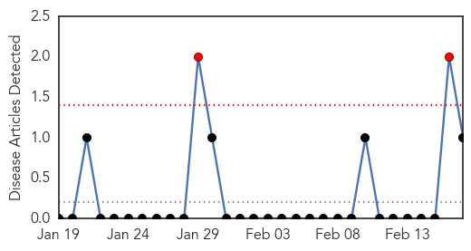

Cholera
30-Day Web Trend
0 alerts, 0 warnings

30-Day Twitter Trend
4 alerts, 0 warnings

Article Locations
Article Confidences

Top Articles:
- 0.991
- Comment: Heed council's cholera warnings
- 0.988
- Kenya : For cholera, prevention always better than cure
- 0.980
- UN Official Advises Sustained Fight Against Cholera in Haiti
- 0.943
- Italian cemetery could preserve cholera DNA
- 0.936
- Scientists Seek Cholera DNA in Tuscan Cemetery
- 0.926
- Italian Cemetery Could Preserve Cholera DNA
- 0.907
- Italian Cemetery Could Preserve Cholera DNA
- 0.690
- Danao City Cholera outbreak, Health exec confirms water contamination
Top Tweets:
-
No tweets found for Feb 17, 2015
West Nile Virus
30-Day Web Trend
2 alerts, 0 warnings

30-Day Twitter Trend
0 alerts, 0 warnings

Article Locations

Article Confidences

Top Articles:
Top Tweets:
-
No tweets found for Feb 17, 2015